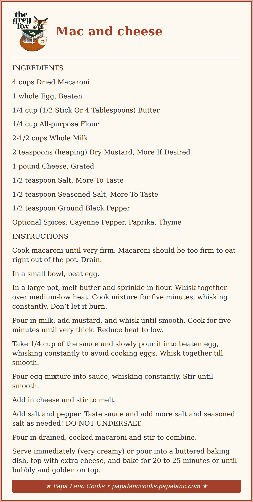

WELCOME
INGREDIENTS
4 cups Dried Macaroni
1 whole Egg, Beaten
1/4 cup (1/2 Stick Or 4 Tablespoons) Butter
1/4 cup All-purpose Flour
2-1/2 cups Whole Milk
2 teaspoons (heaping) Dry Mustard, More If Desired
1 pound Cheese, Grated
1/2 teaspoon Salt, More To Taste
1/2 teaspoon Seasoned Salt, More To Taste
1/2 teaspoon Ground Black Pepper
Optional Spices: Cayenne Pepper, Paprika, Thyme
INSTRUCTIONS
Cook macaroni until very firm. Macaroni should be too firm to eat right out of the pot. Drain.
In a small bowl, beat egg.
In a large pot, melt butter and sprinkle in flour. Whisk together over medium-low heat. Cook mixture for five minutes, whisking constantly. Don’t let it burn.
Pour in milk, add mustard, and whisk until smooth. Cook for five minutes until very thick. Reduce heat to low.
Take 1/4 cup of the sauce and slowly pour it into beaten egg, whisking constantly to avoid cooking eggs. Whisk together till smooth.
Pour egg mixture into sauce, whisking constantly. Stir until smooth.
Add in cheese and stir to melt.
Add salt and pepper. Taste sauce and add more salt and seasoned salt as needed! DO NOT UNDERSALT.
Pour in drained, cooked macaroni and stir to combine.
Serve immediately (very creamy) or pour into a buttered baking dish, top with extra cheese, and bake for 20 to 25 minutes or until bubbly and golden on top.

WELCOME
Converted from the original file for viewing — open/download the original to edit it.